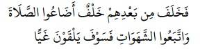

Orang yang selalu menjaga shalat fajar adalah orang yang paling baik dalam kehidupannya, orang yang paling kreatif, dan berhati paling lembut. Diriwayatkan oleh Al-Bukhari dan Muslim dari Abi Hurairah bahwa Nabi Muhammad SAW bersabda,
“Setan mengikat tengkuk kepala salah seorang di antara kalian pada saat tidurnya dengan tiga ikatan, dia memukul setiap ikatan dengan mengatakan bagimu malam yang panjang
maka tidurlah. Lalu apabila dia bangun dan menyebut nama Allah maka terlepaslah satu ikatan, lalu jika dia berwudhu’ maka terlepaslah ikatan ke dua, dan jika dia mendirikan shalat maka terlepaslah ikatan yang ketiga, maka dia akan mengawali pagi dengan jiwa yang kreatif dan berjiwa baik, namun jika tidak maka dia akan menjadi berjiwa buruk dan pemalas”.
Al-Bukhari: 1142 dan Muslim: no: 773
Juga Terdapat banyak riwayat yang melarang meremehkan shalat fajar. Di antara riwayat tersebut adalah hadits yang diriwayatkan oleh Imam Bukhari dan Muslim dari Abi Hurairah RA bahwa Nabi Muhammad SAW bersabda,
Sungguh aku ingin untuk mendirikan shalat, kemudian aku memerintahkan seorang lelaki untuk mengimami shalat, kemudian aku pergi bersama sekelompok orang yang membawa kayu bakar menuju kaum yang tidak menghadiri shalat berjama’ah untuk membakar rumah mereka dengan api”.
Al-Bukhari: 657 dan Muslim: no: 651
Sebagian ulama berkata;
Sesungguhnya Nabi Muhammad SAW tidak ingin melakukan hal yang demikian itu kecuali karena orang yang meninggalkan shalat jama’ah ini telah melakukan dosa yang agung dan kesalahan yang besar.
Diriwayatkan oleh Al-Bukhari dan Muslim dari Ibnu Mas’ud berkata:
Disebutkan di sisi Nabi Muhammad SAW seorang lelaki yang tertidur pada waktu malamnya hingga pagi harinya, maka Nabi Muhammad SAW bersabda,
“Itulah lelaki yang dikencingi oleh setan pada kedua telinganya atau beliau bersabda: Pada telinganya”.
4 Al-Bukhari: 1144 dan Muslim: no: 774
Cukup itu sebagai kerugian dan kekecewaan serta keburukan. Di antara akibat meremehkan shalat subuh secara berjama’ah adalah dihadapkannya seseorang pada ancaman siksa Allah SWT di dalam kuburnya dan di hari kiamat. Allah SWT berfirman:

Maka datanglah sesudah mereka, pengganti (yang jelek) yang menyianyiakan salat dan memperturutkan hawa nafsunya, maka mereka kelak akan menemui kesesatan. (QS. Maryam: 59).
Di dalam shahihul Bukhari di dalam kisah mimpi Nabi Muhammad SAW yang panjang, disebutkan di dalam kisah tersebut bahwa seorang lelaki yang memecah kepalanya dengan sebuah batu, lalu Nabi Muhammad SAW bertanya tentang masalah itu maka dikatakan kepadanya,
“Itulah orang yang mengambil Al-Qur’an lalu menolaknya dan tertidur dari melaksanakan shalat yang diwajibkan”.
HR. Al-Bukhari: no: 7047
Dan majlis fatwa ulama Saudi Arabia ditanyakan (fatwa nomor: 5130) tentang seseorang yang tidak shalat subuh kecuali setelah matahari terbit, bagaimanakah hukum shalatnya?. Apakah hal itu akan memberikan pengaruh pada puasanya?. Maka jawabannya adalah: jika dia meninggalkan shalat subuh bukan karena ketiduran atau lupa namun hanya karena
kemalasan sehingga mengerjakannya setelah matahari terbit maka dia telah kufur dengan kekufuran yang besar, berdasarkan pendapat yang shahih dari perkataan para ulama. Berdasarkan pendapat ini maka puasanya tidak sah.
Segala puji bagi Allah Tuhan semesta alam, semoga shalawat dan salam tetap tercurahkan kepada Nabi kita Muhammad dan kepada keluarga, shahabat serta seluruh pengikut beliau.
Sumber : PDF Islamhouse.com